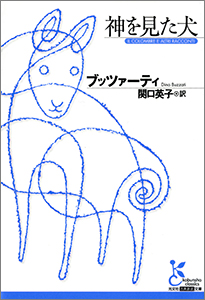
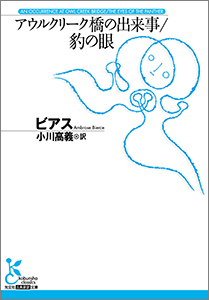
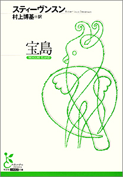
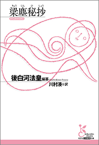
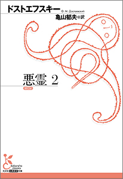
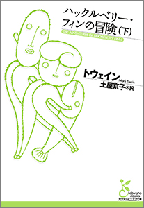
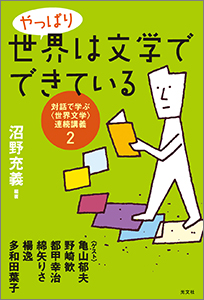
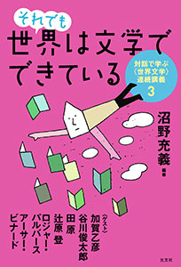

| 光文社古典新訳文庫・駒井稔編集長が熱く推奨する「今こそ読まれるべき古典」79冊 | |
| 光文社古典新訳文庫編集部 | |
序文
古典新訳文庫も創刊から９年目を迎えました。「古典なんて誰が読むのだろう」といわれていた時代を打破すべく、すでに２００冊以上（そのうち電子化された作品は１５７タイトル）を刊行してきました。西洋の古典だけでなく、南米文学やアフリカ文学の古典にまで手を伸ばし、本邦初訳の作品も多数出版してきました。また、文学のみならず哲学、社会学、自然科学まで自由闊達に新訳を試みてきました。世界文学全集や思想書の全集とは違う「21 世紀の新・教養主義」の確立がわたしたちの目標です。今こそ読まれるべき古典作品は何かということを、編集部が考え続けてきた結果がここにあります。
（古典新訳文庫編集長 駒井稔）
ご注意
《紹介ページへ》 のリンクをクリックすると、その書籍のＡｍａｚｏｎ．ｃｏ．ｊｐの商品詳細ページへとびます。
※ｉＰｈｏｎｅ、ｉＰｏｄ Ｔｏｕｃｈ、ｉＰａｄ用のｋｉｎｄｌｅアプリからは、このリンクはご利用いただけません。「この操作は現在対応していません。」というメッセージが表示される旨、ご了承下さい。
目 次
Ｏ・ヘンリー／芹澤 恵（訳）
ヘミングウェイ／小川高義（訳）
ホフマン／大島かおり（訳）
カフカ／丘沢静也（訳）
バルザック／宮下志朗（訳）
ブッツァーティ／関口英子（訳）
スティーヴンスン／南條竹則（訳）／坂本あおい（訳）
バタイユ／中条省平（訳）
マッケン／南條竹則（訳）
フィッツジェラルド／小川高義（訳）
ブラックウッド／南條竹則（訳）
ビアス／小川高義（訳）
バーネット／土屋京子（訳）
ピランデッロ／関口英子（訳）
ポー／小川高義（訳）
サン＝テグジュペリ／野崎 歓（訳）
スティーヴンスン／村上博基（訳）
スティーヴンスン／村上博基（訳）
ディケンズ／池 央耿（訳）
ヘッセ／松永美穂（訳）
ロンドン／深町眞理子（訳）
ロンドン／深町眞理子（訳）
ウェルズ／池 央耿（訳）
ヴェルヌ／高野 優（訳）
ヴェルヌ／高野 優（訳）
ヴェルヌ／高野 優（訳）
コンスタン／中村佳子（訳）
ナボコフ／貝澤 哉（訳）
ラディゲ／中条省平（訳）
コレット／河野万里子（訳）
スタンダール／野崎 歓（訳）
スタンダール／野崎 歓（訳）
トゥルゲーネフ／沼野恭子（訳）
フィッツジェラルド／小川高義（訳）
ヴィアン／野崎 歓（訳）
ドストエフスキー／亀山郁夫（訳）
ドストエフスキー／亀山郁夫（訳）
ドストエフスキー／亀山郁夫（訳）
ドストエフスキー／亀山郁夫（訳）
ドストエフスキー／亀山郁夫（訳）
ドストエフスキー／亀山郁夫（訳）
ドストエフスキー／亀山郁夫（訳）
ドストエフスキー／亀山郁夫（訳）
ドストエフスキー／亀山郁夫（訳）
ドストエフスキー／亀山郁夫（訳）
ドストエフスキー／亀山郁夫（訳）
ドストエフスキー／亀山郁夫（訳）
ローリングズ／土屋京子（訳）
ローリングズ／土屋京子（訳）
トウェイン／土屋京子（訳）
トウェイン／土屋京子（訳）
トウェイン／土屋京子（訳）
プラトン／納富信留（訳）
カント／中山 元（訳）
プラトン／中澤 務（訳）
プラトン／渡辺邦夫（訳）
ミル／斉藤悦則（訳）
マルクス／長谷川 宏（訳）
ニーチェ／中山 元（訳）
ニーチェ／中山 元（訳）
ニーチェ／丘沢静也（訳）
ニーチェ／丘沢静也（訳）
コンラッド／黒原敏行（訳）
簡単に読める作品からスタート 〜短編文学
海外文学の長編を敬遠する人が多いとよく言われます。しかし典型的な長編作家と思われているドストエフスキーもバルザックも、実は読みやすい短編を数多く書いています。『グランド・ブルテーシュ奇譚』は、そういう意味でバルザックの入門書としては最高です。短編集セットを読むことで、海外文学に親しむ第一歩を踏み出してはいかがでしょうか。頑張って長編に挑戦するよりも、まずは短編から始めてみるのが、古典の入門には一番良い方法だと思います。
１ドルの価値／賢者の贈り物 他21 編
Ｏ・ヘンリー／芹澤 恵（訳）
めまぐるしいオフィス風景をユーモラスに描く「多忙な株式仲買人のロマンス」、若く貧しい芸術家たちの姿を描いた「最後の一葉」、表題作の「１ドルの価値」。Ｏ・ヘンリーはアメリカの原風景とも呼べるかつての南部から、開拓期の荒々しさが残る西部、大都会ニューヨークなど、さまざまに舞台を移しながら多彩な作品を生み出した。世界各国で読み継がれる代表作のほか、知られざる作品も新訳で登場。心に染み入る珠玉の23 編。
老人と海
ヘミングウェイ／小川高義（訳）
初訳から60 年、まったく新しい「老人」の誕生！ 数カ月続く不漁のため周囲から同情の視線を向けられながらも、独りで舟を出し、獲物を待つ老サンチャゴ。やがて巨大なカジキが仕掛けに食らいつき、３日にわたる壮絶な闘いが始まる......。原文を仔細に検討することによって、従来の活劇調の翻訳とは違う「老人」像が浮かび上がる！ 決して屈服しない男の力強い姿と哀愁を描いたヘミングウェイ文学の最高傑作。
黄金の壺／マドモワゼル・ド・スキュデリ
ホフマン／大島かおり（訳）
美しい金緑色の蛇に恋した大学生アンゼルムスは非現実の世界に足を踏み入れていくが......代表的メールヘン「黄金の壺」。17 世紀のパリで、天才的な職人が手がけた宝石を所有する貴族たちがつぎつぎと襲われる事件。ようやく逮捕された犯人は意外な人物だった。推理小説の嚆矢ともいえる「マドモワゼル・ド・スキュデリ」。画家で音楽家でもある鬼才ホフマンの多面的な魅力が味わえる４篇を収録。
変身／掟の前で 他２編
カフカ／丘沢静也（訳）
ある朝、不安な夢から目を覚ますと、グレーゴル・ザムザは、自分がベッドのなかで馬鹿でかい虫に変わっているのに気がついた......家族の物語を虫の視点で描いた「変身」。もっともカフカ的な「掟の前で」。カフカがひと晩で書きあげ、カフカがカフカになった「判決」。そしてサルが「アカデミーで報告する」。20 世紀文学を代表する作家カフカの傑作４編を、もっとも新しい〈史的批判版〉にもとづいた翻訳で贈る。
グランド・ブルテーシュ奇譚
バルザック／宮下志朗（訳）
善人も、偽善者も、悪人もバルザックの描く人間がおもしろい！ 妻の不貞に気づいた貴族の起こす猟奇的な事件を描いた表題作、黄金に取り憑かれた男の生涯を追う「ファチーノ・カーネ」、旅先で意気投合した男の遺品を恋人に届ける「ことづて」など、90 篇あまりもの作品からなる《人間喜劇》と呼ばれる作品群から人間の心理を鋭く描いた４篇を収録。ひとつひとつの物語が光源となって人間社会を照らし出す短編集。
神を見た犬
ブッツァーティ／関口英子（訳）
モノトーンで哀切きわまりない孤高の美の世界を描きながら、人が無意識のうちに心の奥底に抱えている心象風景を類まれな感性で捉えて容赦なく突きつける、イタリアの奇想作家ブッツァーティの代表的短篇集。とつぜん出現した謎の犬におびえる人々を描く表題作、老いた山賊の首領が手下にも見放され、たった一人で戦いを挑む「護送大隊襲撃」、そして幻の傑作と謳われる「戦艦《死》」など22 篇を収録。

新アラビア夜話
スティーヴンスン／南條竹則（訳）／坂本あおい（訳）
理由なき自殺願望者が集うロンドンの夜。クリームタルトを持った若者に導かれ、「自殺クラブ」に乗り込んだボヘミアの王子フロリゼルが見たのは、奇怪な死のゲームだった。美しい「ラージャのダイヤモンド」をめぐる冒険譚を含む、世にも不思議な七つの物語集。『宝島』『ジーキル博士とハイド氏』の著者スティーヴンスンが書いた19 世紀ロンドン版「アラビアンナイト」！
マダム・エドワルダ／目玉の話
バタイユ／中条省平（訳）
「ある街角で、不安が私に襲いかかった。汚らしく、うっとりするような不安だ」エロスの狂気が神を超える！ 戦慄に満ちた娼婦との一夜を描く短編「マダム・エドワルダ」に加え、目玉、玉子など球体への異様な嗜好を持つ少年少女のあからさまな変態行為を描いた「目玉の話」を収録。60 年代末の日本文学界を震撼させ、三島由紀夫らも絶賛したバタイユ小説の白眉、スキャンダラスな原作の世界をすみずみまで再現する衝撃の新訳！
白 魔
マッケン／南條竹則（訳）
「白い人が、微笑みながらやって来る......」緑色の手帳に残された少女の手記。彼女は迷い込んだ森のなかで「白い人」に魅せられ、導かれて......（「白魔」）。平凡な毎日を送るロンドンの銀行員にウェールズの田舎の記憶が甦り、やがて〝本当の自分〟に覚醒していく（「生活のかけら」）。自らも絶望のうちに黒魔術に傾倒した経歴を持つ不遇の英国作家マッケンが、魔の世界を幻視する幻想怪奇短編！ 本邦初訳の３篇を含む。
若者はみな悲しい
フィッツジェラルド／小川高義（訳）
理想の女性を追いつづける男の哀しみを描く「冬の夢」。わがままな妻が大人へと成長する「調停人」。親たちの見栄と自尊心が交錯する「子どもパーティ」など、本邦初訳４篇を含む９篇を収録。アメリカが最も輝いていた１９２０年代を代表する作家フィッツジェラルドが、若者と、かつて若者だった大人たちを鮮やかに描きだした珠玉の自選短編集。
秘書綺譚
ブラックウッド幻想怪奇傑作集
ブラックウッド／南條竹則（訳）
夜中の３時、正装した紳士が自分の部屋に立っていたら......。古典的幽霊譚である「空家」、「約束」、吸血鬼と千里眼がモチーフの「転移」、美しくも奇妙な妖精話「小鬼のコレクション」、詩的幻想の結晶「野火」ほか、名高い主人公ジム・ショートハウス物を全篇収める。芥川龍之介、江戸川乱歩が絶賛したイギリスを代表する怪奇小説作家の傑作短篇集。「恐怖の王道」ここに降臨す！
アウルクリーク橋の出来事／豹の眼
ビアス／小川高義（訳）
ある男が橋の上で絞首刑になろうとしていた。足元の板が外され川に落ちた彼が、敵の銃弾を逃れてたどり着いたところとは（「アウルクリーク橋の出来事」）？ 森に住む女が恋人からの求婚を頑なに拒んだ理由とは（「豹の眼」）？ 『悪魔の辞典』の著者として有名なビアスは、苛烈な南北戦争や長男の決闘死といった自らの経験をもベースに、ひたすら「死」を描き続けた短篇の名手でもあった。その代表的な14 篇を収録。

８歳から80 歳の子どもたちへ 〜児童文学
児童文学は子どもだけが読むものではありません。古典新訳文庫では「８歳から80 歳の子どもたちへ」というコンセプトで児童文学に取り組んできました。翻訳家の皆さんにお願いしているのは、手加減のない文章で、ということです。子どもこそレベルの高い日本語表現に触れるべきですし、それは大人も十分楽しめるものになるはずです。お子さんとあるいはお孫さんと一緒に、もう一度児童文学の精髄に触れてみませんか。
秘密の花園
バーネット／土屋京子（訳）
インドで両親を亡くしたメアリは、英国ヨークシャーの大きな屋敷に住む叔父に引きとられ、そこで病弱な従兄弟のコリン、動物と話ができるディコンに出会う。３人は長いあいだ誰も足を踏み入れたことのなかった「秘密の庭」を見つけ、その再生に熱中していくのだった。『小公女』の作者が、淡々としかし力強く綴った、大人が読んでこそ胸に響くアメリカ児童文学の傑作。
月を見つけたチャウラ
ピランデッロ短篇集
ピランデッロ／関口英子（訳）
シチリア出身のノーベル賞作家が、突然訪れる「人生の真実の瞬間」を、時に苦々しく、時にユーモラスに描く短篇集。硫黄鉱山での重労働の果てに暗い坑道を抜け出ると......静かで深い感動に包まれる表題作、作家が作中の人物たちの愚痴や悩みを聞く「登場人物の悲劇」、愛犬への奇妙な衝動が抑えられない男を描いた「手押し車」、ケチな領主と頑固な職人との意地の張り合いがおかしい「甕」など15 篇を精選収録。
黒猫／モルグ街の殺人
ポー／小川高義（訳）
暖炉に押し込められた令嬢、身体を切り裂かれた老婦人......誰が、いかにして殺したのか？ 推理小説が一般的になる半世紀も前に、不可能犯罪に挑戦する世界最初の探偵・デュパンを世に出した「モルグ街の殺人」。１６０年の時を経て、いまなお色褪せない映像的恐怖を描き出した「黒猫」など、代表的８篇。多才を謳われながら不遇のうちにその生涯を閉じた、ポーの魅力を堪能できる短編集。
ちいさな王子
サン＝テグジュペリ／野崎 歓（訳）
砂漠に不時着した飛行士「ぼく」の前に突然現れた不思議な少年は、ちいさな星からやってきた王子だった。わかりあい、やがてかけがえのない友人になったとき、王子は自分の星に帰ることを告げる......。王子の言葉は、ずっと忘れていた、たくさんのことを思い出させてくれた。「目ではなにも見えないんだ。心でさがさなくちゃ」。飛行士としての経験豊富なサン＝テグジュペリにこそ紡ぐことのできた色褪せることのないファンタジー。
ジーキル博士とハイド氏
スティーヴンスン／村上博基（訳）
街中で少女を踏みつけ、平然としている凶悪な男ハイド。彼は高潔な紳士として名高いジーキル博士の家に出入りするようになった。二人にどんな関係が？ 弁護士アタスンは好奇心から調査を開始する。そんな折、ついにハイドによる殺人事件が引き起こされる！ 高潔温厚な紳士と、邪悪な冷血漢――善と悪に分離する人間の二面性を追求した怪奇小説の傑作であり、「悪になることの心の解放」をも描いた画期的心理小説、待望の新訳！
宝島
スティーヴンスン／村上博基（訳）
港の宿屋「ベンボウ提督亭」を手助けしていたジム少年は、泊まり客の老水夫から宝の地図を手に入れる。大地主のトリローニ、医者のリヴジーたちとともに、宝の眠る島への航海へジムは出発する。だが、船のコックとして乗り込んだジョン・シルヴァーは、悪名高き海賊だった......。胸躍る展開と個性的な敵役、臨場感あふれる描写。新訳では少年の成長に光をあて、大人の読み物として甦る。

クリスマス・キャロル
ディケンズ／池 央耿（訳）
並はずれた守銭奴で知られるスクルージは、クリスマス・イヴにかつての盟友で亡きマーリーの亡霊と対面する。マーリーの予言通りに３人の精霊に導かれて、自らの辛い過去と対面し、クリスマスを祝う、貧しく清らかな人々の姿を見せられる。そして最後に自分の未来を知ることに――。ヒット映画原作を古典新訳で！
車輪の下で
ヘッセ／松永美穂（訳）
周囲の期待を一身に背負い猛勉強の末、神学校に合格したハンス。しかし、厳しい学校生活になじめず、次第に学業からも落ちこぼれていく。そして、友人のハイルナーが退校させられると、とうとうハンスは神経を病んでしまうのだった。療養のため故郷に戻り、そこで機械工として新たな人生を始めるが......。地方出身の優等生が、思春期の孤独と苦しみの果てに破滅へと至る姿を描いたヘッセの自伝的物語。
野性の呼び声
ロンドン／深町眞理子（訳）
ゴールドラッシュに沸くカナダ・アラスカ国境地帯。ここでは犬橇が開拓者の唯一の通信手段だった。大型犬バックは、数奇な運命のもと、この地で橇犬となる。大雪原を駆け抜け、力が支配する世界で闘い、生きのびていくうちに、やがてその血に眠っていたものが目覚めはじめるのだった。苛酷な大自然を力のかぎり生きぬく犬たちの誇り高き生命の物語。20 世紀初頭、アメリカで国民的な人気を博したジャック・ロンドンの出世作。
白い牙
ロンドン／深町眞理子（訳）
犬の血を４分の１引いて、北米の原野に生まれた狼「ホワイト・ファング（白い牙）」。親や兄弟が次々と死んでいく〝自然〟のなかで、強く、狡く生きていく。だが、あるとき人間に飼われることになり、人間の残虐さや愛情に触れることで、心のなかにさまざまな葛藤が生まれるのだった。野性の血を研ぎ澄ます孤独な灰色狼の目を通して人間と文明社会を描いた、ジャック・ロンドンの代表作。
タイムマシン
ウェルズ／池 央耿（訳）
時空を超える〈タイムマシン〉を発明したタイム・トラヴェラーは、80 万年後の世界へ飛ぶ。そこは、地上に住む華奢で穏やかなイーロイ人と、地底をねぐらにする獰猛なモーロック人という２種族からなる原始的な階級社会だった。人類の未来の姿に瞠目しながら探索を進めるうち、この世界の恐るべき真実が明らかに！ 爆発的な想像力が生んだリアルな世界を格調高い新訳で。
地底旅行
ヴェルヌ／高野 優（訳）
謎の暗号文を苦心のすえ解読したリーデンブロック教授と甥の助手アクセル。二人は寡黙なガイド、ハンスとともに地球の中心へと旅に出た。そしてそこで三人が目にしたものは......。地底世界を驚異的な想像力で自在に活写し、常識的な感覚を揺さぶる究極のＳＦ小説を圧倒的な臨場感あふれる新訳で贈る。
八十日間世界一周（上）
ヴェルヌ／高野 優（訳）
１８７２年のロンドン、謎の紳士フォッグ氏は、《改革クラブ》の友人と大金２万ポンドの賭けをした。それは80 日間あれば世界を１周できるというものだった。成功に絶対の自信をもつフォッグ氏は、フランス人の召使いパスパルトゥーを従えて出発。全財産とプライドを賭けた旅が始まった！ 『海底二万里』、『二年間の休暇』など、ＳＦ小説の先駆者であり冒険小説で有名なジュール・ヴェルヌの代表作。
八十日間世界一周（下）
ヴェルヌ／高野 優（訳）
汽船、汽車、象と、あらゆる乗り物を駆使し、次々と巻き起こる障害を乗り越えていくフォッグ氏たち。インドで命を助けたアウダ夫人も仲間に加わり、中国から日本を目指す。しかし、酒とアヘンに酔った召使いパスパルトゥーはフォッグ氏と離ればなれになってしまい、最大のピンチが訪れる！ 次々と巻き起こるアクシデント、ぎりぎりのスケジュール......果たして旅は成功するのか!?
いにしえから続く官能の世界 〜不倫・恋愛文学
文学の世界で一番多く扱われるテーマは、もちろん恋愛ですね。古今東西を問わず人間の多くの苦悩は恋から生じ、時にはその身を破滅させてしまいます。また、恋愛は深く内省の世界に誘い、人間的成長を助けます。古典文学における恋愛は、不倫という形をとって現われることが多く、主人公はその恋のために身を捧げるのです。恋愛小説の精華ともいうべき作品を集めてみました。恋愛とは人生そのものです。その苦しみと歓喜を読書を通じて味わってみてはいかがですか。
アドルフ
コンスタン／中村佳子（訳）
将来を嘱望された青年アドルフは、Ｐ伯爵の愛人エレノールに執拗に言い寄り、ついに彼女の心を勝ち取る。が、裕福な生活や子供たちを捨ててまでも一緒に暮らしたいと願うエレノールがだんだんと重荷になり、アドルフは自由を得ようと画策するが......。もはや愛していない女から離れられない男、人生のすべてをなげうって男を束縛する女。自らも人妻たちとの不倫で浮名を流した作家コンスタンのみが書きえたフランス恋愛小説の傑作。
カメラ・オブスクーラ
ナボコフ／貝澤 哉（訳）
裕福で育ちの良い美術評論家クレッチマーは、たまたま出会った美少女マグダに夢中になるのだが、そこにマグダの昔の愛人が偶然姿をあらわす。ひそかに縒りを戻したマグダに裏切られているとは知らず、クレッチマーは妻と別居し愛娘をも失い、奈落の底に落ちていく......。あの『ロリータ』の原型であるナボコフ初期の傑作。英語版と大きく異なるロシア語原典の独特の雰囲気を活かし、細部の緻密な面白さを際立たせた野心的な新訳。
肉体の悪魔
ラディゲ／中条省平（訳）
第一次大戦下のフランス。パリの学校に通う15 歳の「僕」は、ある日、19 歳の美しい人妻マルトと出会う。二人は年齢の差を超えて愛し合い、マルトの新居でともに過ごすようになる。やがてマルトの妊娠が判明したことから、二人の愛は破滅に向かって進んでいく......。早熟な少年の人妻への恋を、天才作家が悪魔的な筆致で描く20 世紀心理小説の白眉、研ぎ澄まされた文体で甦った決定訳！
青い麦
コレット／河野万里子（訳）
毎年、幼なじみのフィリップとヴァンカは、夏をブルターニュの海辺で過ごす。だが、16 歳と15 歳になった今年はどこかもどかしい。互いを異性として意識し始めた二人の関係はぎくしゃくしている。そこへ現れた年上の美しい女性の存在が、二人の間に影を落とす......。生涯に三度結婚し、同性愛も経験するなど、恋の機微を知り奔放な愛に生きた作家コレットが描いた、女性心理小説の傑作
赤と黒（上）
スタンダール／野崎 歓（訳）
スタンダールの代表作に新訳登場。ナポレオン失脚後のフランス、貧しい家に育った青年ジュリヤン・ソレルは、立身のため僧職に身を投じる。やがて貴族であるレナール家の家庭教師となり、その美貌からレナール夫人に慕われるようになる。ジュリヤンは金持ちへの反発と野心から、夫人を誘惑するのだが......。才知と美貌で激動の時代を駈けぬけた主人公の誇り高き精神を、新たな解釈で生き生きと描き出す。
赤と黒（下）
スタンダール／野崎 歓（訳）
神学校を足がかりに、ジュリヤンの野心はさらに燃え上がる。パリの貴族ラ・モール侯爵の秘書となり、社交界の華である侯爵令嬢マチルドの心をも手に入れる。しかし野望が達成されようとしたそのとき、レナール夫人から届いた一通の手紙で、物語は衝撃の結末を迎える！ 抑圧的な社会で激しく苦悩する魂の葛藤を描いた「情熱の文学」、ついに完結！
初恋
トゥルゲーネフ／沼野恭子（訳）
16 歳の少年ウラジーミルは、隣に引っ越してきた年上の公爵令嬢ジナイーダに、一目で魅せられる。初めての恋にとまどいながらも、思いは燃え上がる。取り巻きの青年たちと恋のさや当てが始まるなか、ある日彼女が恋に落ちたことを知る。だが、相手はいったい誰なのか？ 初恋の甘く切ないときめきが、主人公の回想で綴られる。作者自身がもっとも愛した自伝的中編。
グレート・ギャッツビー
フィッツジェラルド／小川高義（訳）
絢爛豪華な邸宅に贅沢な車を持ち、夜ごと盛大なパーティを開く男ギャッツビーが、ここまで富を築き上げてきたのはすべて、かつての恋人を取り戻すためだった。だが、異常なまでのその一途な愛は、やがて悲劇を招く。過去は取り返せると信じて夢に賭け、そして砕けた男の物語。リアルな人物造形によってギャッツビーの意外な真実の姿が見えてくる新訳！
知る人ぞ知る名著１ 〜アジア文学
古典新訳文庫は西洋の文学や哲学ばかりを新訳していると思っている読者が多いのですが、実はアジア文学もあるのです。川村湊さんが新訳した『歎異抄』では、親鸞が「関西弁」で語りかけます。『梁塵秘抄』では、後白河法皇が熱愛した今様が、現代でいえば歌謡曲であるという考え方で、同じく川村さんが現代語訳しました。どちらも日本古典文学の翻訳史における革命的なお仕事です。魯迅の短編集は、初めて原文の持つニュアンスを正確に再現した翻訳で高い評価を得ています。この３作品は個人的にもお勧めです。
歎異抄
唯円／親鸞（述）／川村 湊（訳）
「アミダ如来はんにいただいた信心を、おれのもんやいう顔で取り返そういうのんは、ホンマにアホらしいことやで」。「ホトケはんやお寺さんへのおフセが多い少ないで、大きなホトケや小っさいホトケになるんやいうのは、こりゃあ、ケッタイな説や」。天災や飢饉に見舞われ、戦乱の収まらない鎌倉初期の無常の世にあって、唯円は師が確信した「他力」の真意を庶民に伝えずにいられなかった。親鸞の教えをライブ感溢れる関西弁で！
■編集長のオススメポイント
「善 え奴が往生するんやさかい、ましてや悪い奴がそうならんはずがない」。この原文はあの有名な「善人なをもて往生をとぐ、いはんや悪人をや。」です。まるで親鸞が目の前にいて関西弁でしゃべっているようですね。『歎異抄』の現代語訳は数々ありますが、ここまで大胆に踏み込んだ、わかりやすい訳は、ほかにありません。川村湊さんの新訳は、日本古典の翻訳史における画期的な仕事だと思います。ぜひ、親鸞の「肉声」を聞いてみてください。
梁塵秘抄
後白河法皇（編纂）／川村 湊（訳）
歌の練習に明け暮れ、声を嗄らし喉を潰すこと、三度。サブ・カルチャーが台頭した中世、聖俗一体の歌謡のエネルギーが、日本の第77 代天皇でもあった後白河法皇を熱狂させた。画期的新訳による中世流行歌１００選！「わたしは バカな 女です」「マリーのひとりごと」「わが子ゆえの嘆き」「も一度 抱いて」など。日本古典の現代語訳を一新！ 歌謡曲のルーツはここにある。
■編集長のオススメポイント
「赤い口元 光らせて 夢が破れそうな 路地に立つ 可愛いあの子の アソコが濡れる」。『梁塵秘抄』の原歌３９８の新訳。遊女たちを歌ったものです。後白河法皇が喉をつぶすこと三度といわれるほど熱狂した「俗謡」は、今日のポップス。本来、巷で歌われていたものが、なぜか現代語訳では重々しいものになってしまう。訳者の川村湊さんが、俗謡は現代でいえば歌謡曲だという視点で、新訳に挑戦しました。中世のサブカルが炸裂する流行歌全１００。

故郷／阿Ｑ正伝
魯 迅／藤井省三（訳）
久しぶりに再会した幼なじみは、かつて僕の英雄だった頃の輝きを失っていた......切なさと次世代への期待に溢れる「故郷」。定職も学もない男が、革命の噂に憧れを抱いた顛末を描く「阿Ｑ正伝」。周りの者がみな僕を食おうとしている！ 狂気の所在を追求する「狂人日記」など、文学で革命を起こした中国現代文学の父、魯迅の代表作『吶喊』『朝花夕拾』から16 篇を収録。
■編集長のオススメポイント
本書では既訳とはまったく違う、魯迅本来の長くうねるような文体が過不足なく新訳されています。中国近代文学の創始者である魯迅は、日本と中国がともに近代化に向かって突き進んでいった激動の時代に活躍しました。珠玉の16 編のうち、お勧めは自伝的作品である「藤野先生」。魯迅自身の日本留学中の体験が下敷きとなっている、実に考えさせられるところの多い作品です。日中関係が難しい今だからこそ、多くの読者に読んでいただきたいと思います。

知る人ぞ知る名著２ 〜ラテン文学
「ラテン・アメリカ文学といえばスペイン語」という常識に挑戦したのが、最初の２作品です。マシャード・ジ・アシスはブラジルを代表する作家。ポルトガル語で書かれた作品です。この２作は未知なる文学に触れる楽しみを与えてくれます。ブラジルというとサッカーとボサノバとサンバ以外は知らない人が多いのですが、こんなに面白い作品があったなんて！ とにかく一読をお勧めします。『知への賛歌』はメキシコの修道女フアナの書いた詩と手紙です。まだ封建的な17 世紀後半を生きた一人の知的な女性が残した極めて文学性の高い作品なのですが、驚くべきことにこの時代にいち早く女性の自立について考察しているのです。この作品は本邦初訳です。
ブラス・クーバスの死後の回想
マシャード・ジ・アシス／武田千香（訳）
死んでから作家となった書き手がつづる、とんでもなくもおかしい、かなしくも心いやされる物語。カバにさらわれ、始原の世紀へとさかのぼった書き手がそこで見たものは......。ありふれた「不倫話」のなかに、読者をたぶらかすさまざまな仕掛けが施される。斬新で型破り、スーザン・ソンタグやハロルド・ブルームなどの高名な批評家も高く評価する、ブラジル文学の頂点に座す作家の最高傑作。
ドン・カズムッホ
マシャード・ジ・アシス／武田千香（訳）
「いつもいっしょ......」「こっそりと......」「もし二人が恋仲にでもなったら......」。彼女は視線をゆっくり上げ、私たちは互いにみつめあった......。みずみずしい描写で語られる愛と友情。美少女と美少年の美しくせつない「恋」と「疑惑」の物語。小説史上まれにみる魅力的なヒロインが、こんなところに隠れていた。一見「普通の」温かな回想記のような印象を与えるが、画期的な文学技法上で書かれたブラジル文学の傑作。
知への賛歌 修道女フアナの手紙
ソル・フアナ／旦 敬介（訳）
３００年前のメキシコに社会の規範や道徳と闘った女性がいた！ 詩こそが最高の文学だった17 世紀末。ソル・フアナはそんな時代に世界で最も愛された詩人だ。美貌の修道女でありながら、恋愛、女性の権利、学問への欲求、抑圧的な社会への抗議などをテーマとした作品を残した。彼女の思想を明快に表現した詩と２通の手紙を、詳細な解説とともにまとめたわが国初の試み。
亀山郁夫訳で読む 〜ドストエフスキー作品集
世界はますます混迷の度合を深めています。我々現代の日本人にとって、ドストエフスキーの巨大な作品群は、歴史の大きな転換点に生きるうえで一段と切実なものとなってきたのではないでしょうか。世界でも特異な現象だといわれるドストエフスキー・ブームの火付け役となった亀山先生の新訳はその意味でも、今後さらに広く深く読まれていくと思います。作品に登場する人物が、私たちのすぐ隣にいるかのようなリアリティが感じられますし、まるで現代作品のように読むことができるシリーズです。ここでお知らせを一つ。お待たせしている亀山先生の次の作品は『白痴』です。
罪と罰 １
ドストエフスキー／亀山郁夫（訳）
貧困・孤独・狂気の渦巻く大都会のかたすみに、「理想的な」殺人をたくらむ青年が住んでいた。酔いどれ役人との出会い、母からの重い手紙、馬が殺される悪夢。ディテールが、運命となって彼に押し寄せる！歩いて七百三十歩のアパートに住む金貸しの老女を、主人公ラスコーリニコフはなぜ殺さねばならないのか。日本をはじめ世界の文学に決定的な影響を与えたドストエフスキーの代表作のひとつ、ついに新訳刊行。
罪と罰 ２
ドストエフスキー／亀山郁夫（訳）
目の前にとつぜん現れた愛する母と妹。ラスコーリニコフは再会の喜びを味わう余裕もなく、奈落の底に突きおとされる。おりしも、敏腕の予審判事ポルフィーリーのもとに出向くことになった彼は、そこで、背筋の凍るような恐怖を味わわされる。すでに戦いは始まっていた！ 予審判事との駆け引きで明かされるラスコーリニコフの「殺人思想」とは？ 犯罪小説の雄、戦慄の第二巻。
罪と罰 ３
ドストエフスキー／亀山郁夫（訳）
殺人を犯した者の詳細な運命がつづられる最終巻。ラスコーリニコフをはじめ、母、妹、友人、そして娼婦ソーニャなど、あらゆる「主人公たち」が渦巻きながら生き生きと歩き、涙し、愛を語る。ペテルブルグの暑い夏の狂気は、ここに終わりを告げる......。犯罪者に救いは訪れるのか？ 人間の本当の罪、本当の罰が明らかになる！ 画期的新訳、ついに完結。
悪霊 ２
ドストエフスキー／亀山郁夫（訳）
町でささやかれる怪しげな噂は、大きな出来事の前ぶれだった。１人が狂い、２人が燃えあがり、５人が密議をめぐらし、そしてみんな取り憑かれていく。暗い夜が育む悪意の芽。ついに明らかになった、ピョートルの真の狙いとは。「ドストエフスキーの全小説中、もっとも謎をはらんだ部分（訳者）」といえる第２部。アカデミー版「スタヴローギンの告白」初訳を含む新訳決定版。

悪霊 ３
ドストエフスキー／亀山郁夫（訳）
街はいよいよ狂乱に向かって突っ走りはじめた。まずは県知事夫人ユーリヤの肝いりによる「慈善パーティ」で、何かが起こる気配。その背後では着々と陰謀が進行し、「五人組」の活動も風雲急を告げる。ワルワーラ夫人とステパン・ヴェルホヴェンスキー氏、スタヴローギンとリーザの「愛」の行方は？ 生き残るのは誰か？ 愛と悪、崩壊と再生のクライマックス。
悪霊 別巻
「スタヴローギンの告白」異稿
ドストエフスキー／亀山郁夫（訳）
世界初、３つの「告白」を同時収録！ 「スタヴローギンの告白」として知られる『悪霊』第２巻「チーホンのもとで」には、３つの異稿が残されている。本書ではそのすべてを訳出した。さらに近年のドストエフスキー研究のいちじるしい進化＝深化をふまえ、精密で画期的な解説を加えた。テクストのちがいが示すものは何か？ ドストエフスキーがめざした〝究極の作品〟を読み解くための特別編。
カラマーゾフの兄弟１
ドストエフスキー／亀山郁夫（訳）
父親フョードル・カラマーゾフは、圧倒的に粗野で精力的、好色きわまりない男だ。ミーチャ、イワン、アリョーシャの３人兄弟が家に戻り、その父親とともに妖艶な美人をめぐって繰り広げる葛藤。アリョーシャは、慈愛あふれるゾシマ長老に救いを求めるが......。
カラマーゾフの兄弟２
ドストエフスキー／亀山郁夫（訳）
ゾシマの言葉にしたがって、アリョーシャは父の家に出かける。父と長男ミーチャとの確執は、激しさを増していくようだ。イリューシャとの出会い、スネギリョフ大尉の家で目にしたものなど、アリョーシャの心はさまざまに揺れ動き、イワンの「大審問官」で究極の衝撃を受ける。
カラマーゾフの兄弟３
ドストエフスキー／亀山郁夫（訳）
ゾシマの死に呆然とするアリョーシャ。しかし長老の遺体には、信じられない異変が起こる。いっぽう、第２巻で〈消えて〉いたミーチャは、そのころ自分の恥辱をそそぐための金策に走り回っていた。そして、ついに恐れていた事態が。父フョードルが殺された！ 犯人は誰なのか？
カラマーゾフの兄弟４
ドストエフスキー／亀山郁夫（訳）
11 月初め。フョードル殺害犯として逮捕されたミーチャのまわりで、さまざまな人々が動きだす。アリョーシャと少年たちは病気の友だちを見舞い、イワンはスメルジャコフと会って事件の「真相」を究明しようとする。そして裁判で下された驚愕の判決。ロシアの民衆の真意とは何か！
カラマーゾフの兄弟５
エピローグ別巻
ドストエフスキー／亀山郁夫（訳）
「エピローグ」では、主人公たちのその後が描かれる。彼らそれぞれに、どんな未来が待ち受けているのか......。訳者・亀山郁夫が渾身の力で描いた「ドストエフスキーの生涯」と「解題」は、この至高の名作を味わうための傑出したすばらしいガイド＝指針となるにちがいない。
最後まで読んだ者にしか到達できない境地......長編小説の醍醐味
高慢と偏見（上）
オースティン／小尾芙佐（訳）
溌剌とした知性を持つエリザベスと温和な姉ジェインは、近所に越してきた裕福で朗らかな青年紳士ビングリーとその友人ダーシーと知り合いになる。エリザベスは、ダーシーの高慢な態度に反感を抱き、彼が幼なじみにひどい仕打ちをしたと聞き及び、彼への嫌悪感を募らせるが......。緻密な構成と秀逸な人物造形、迫力あるドラマがダイナミックかつ繊細に描かれる。躍動感あふれる新訳！
■編集長のオススメポイント
長編小説は、多忙な現代人には好まれない。誰がそんなことを言ったのでしょう。長い小説は、たしかに読破するのに時間がかかります。でもそれだけの時間、小説世界に浸っていることができるのは、素晴らしいことだと思います。そこで、お勧めなのがこの恋愛小説の傑作。新訳していただいたのは、『アルジャーノンに花束を』の名訳で知られる小尾芙佐さんです。イギリスの名高い小説が、かくも格調高く現代日本によみがえりました。しかも読みどころである、主人公たちの感情の機微も見事に再現されています。人生は短い。だからこそ、長編小説を読むのです。
高慢と偏見（下）
オースティン／小尾芙佐（訳）
劇的な展開、真実を突く台詞「大嫌い」から始まった恋の行方は？ ダーシーの屈折した恋の告白にエリザベスは反発した。だが、ダーシーの手紙で己の誤解に気づき、数カ月後の思わぬ再会で彼への感情は変化していく。そこへ、末妹の出奔、彼の叔母君の横槍が......。恋のすれ違いを笑いと皮肉たっぷりに描く英国文学の伝統を確立した、シェイクスピアにも比肩する大作家の代表作。
チャタレー夫人の恋人
Ｄ・Ｈ・ロレンス／木村政則（訳）
上流階級の令夫人コニーは、戦争で下半身不随となった夫の世話をしながら、生きる喜びのない日々を送っていた。そんなとき屋敷の森番メラーズに心奪われ、逢瀬を重ねることになるが......。身分や地位を超えて激しく愛し合う男女を描いた至高の恋愛小説。過激な性描写ばかりが注目されてきた従来の作品イメージを覆す新訳。登場人物たちの苦悩や絶望はきわめて現代的であり、今を生きる我々にとって隣人とも呼べる存在だ。
■編集長のオススメポイント
皮肉なことにあまりに有名で、しかも伝説的な作品ほど読まれない。その意味では、この小説は世界でもっとも不幸な小説であると言えるでしょう。気鋭の翻訳家である木村政則さんの手になる『チャタレー夫人』をお勧めするのは、すべての先入観を捨てて、この作品に向かい合って欲しいからです。そこから浮かび上がってくるのは、一人の若い女性が、裸のまま、じかに世界と向き合っている孤独と焦燥にほかなりません。この新訳によって、はじめて主人公のコニーとメラーズは、ほんとうにわが国に生きることになりました。長い小説です。でも読み終えた後、いままでに味わったことのない静かな喜びに満たされることでしょう。
女の一生
モーパッサン／永田千奈（訳）
男爵家の一人娘に生まれ何不自由なく育ったジャンヌ。彼女にとって、人生は夢が次々と実現していくものであるはずだった。しかし、現実はジャンヌを翻弄し続ける。乳母妹だった女中のロザリが妊娠し、その相手が自分の夫であることを知った時、彼女は過酷な現実を生き始めた――。感情移入を抑えて、現実を美化せずにありのままを描く自然主義文学の真髄ともいえる傑作。
■編集長のオススメポイント
この小説は、フランス文学のベテラン翻訳家、永田千奈さんの素晴らしい新訳で読みやすいけれども、かなりな文学ファンでも、なかなか手を出しにくいかもしれません。貴族の家に生まれた若い女性が、予想もしなかったさまざまな人生の辛酸を舐め......。これだけでもう読み続けるのが辛いと思っていませんか。しかし、この作品が今日まで読み継がれてきた本当の理由は、最後のページに到達した読者だけが分かるのです。ただ、じっと我慢してページを繰り、読了したとき、心の奥から深い感動がゆっくりと湧いてきます。原題は『ある人生』。とてもそっけないのですが、その意味するところが理解できると万感胸に迫るはずです。
翻訳家・土屋京子さんのアメリカ児童文学「３部作」
仔鹿物語（上）
ローリングズ／土屋京子（訳）
19 世紀後半のフロリダ。人里での摩擦を避け、矮樹林が広がる土地で厳しい開墾生活を送るバクスター一家。ある日、父ペニーがとっさに撃ち殺した雌ジカの傍らに、母を失った仔ジカが立ち尽くしていた。息子ジョディは仔ジカに魅了され育てたいと両親に懇願する......。美しくも苛酷な自然と、逞しく生きる人々の営みを描いたアメリカ文学不朽の名作！
■編集長のオススメポイント
『ワイルド・スワン』『マオ』などの硬派なノンフィクションの名翻訳家として知られる土屋京子さんが手掛けたアメリカ文学「３部作」の第１作。海外の児童文学には抄訳、つまり要約されて訳されているものがたくさんあります。この『仔鹿物語』はその代表的存在といえるでしょう。原作はピューリッツァー賞を受賞した大人の鑑賞にも十分耐えうる作品なのですが、ほとんどの人は全貌を知りません。フロリダに暮らす貧しい農民の過酷な生活が、土屋さんの素晴らしい筆致で驚くほどリアルに再現されています。特に迫力ある自然描写はすごいの一言です。
仔鹿物語（下）
ローリングズ／土屋京子（訳）
フラッグと名づけられた仔ジカは、ジョディの無二の親友となった。だが、育ちざかりのフラッグは次第に一家の大事な畑を食い荒らすようになり、父はジョディに厳しい決断を迫る......みずからもアメリカの原生林に身を置いた作家が、美しくも過酷な自然の中で、逞しく生きる人々の姿を圧倒的な筆力で描いたピュリッツァー賞受賞作。
トム・ソーヤーの冒険
トウェイン／土屋京子（訳）
トムは悪さと遊びの天才だ。言いつけの塀塗りをみんながうらやむ仕事に変えたり、退屈な教会の説教をクワガタ一匹で忍び笑いの場にしたり、家出して親友のハックたちと海賊になってみたり。だがある時、偶然に殺人現場を目撃してしまい......。わんぱく少年トムを通じて描かれる、自由を求める心と冒険への憧れ、そして世界を見る無垢な目。アメリカで最も愛される作家の半自伝的小説を、少年たちの声が聞こえてくる新訳で。
■編集長のオススメポイント
誰でも名前は知っているこの作品が、実はこんなにも複雑で陰影に富んだ物語だと思い知らされるのは、この新訳の持つパワーのおかげです。ありきたりなイメージが一新されるのは衝撃的ですらあります。なにせ「訳者あとがき」で、土屋さんはマーク・トウェインの文章は「ゴシック」なのだと断じたうえで、いわゆる子ども向けの翻訳にありがちな手加減を一切排したことを宣言しています。ガツンと手ごたえのあるトム・ソーヤーの物語を、もう一度読んでみませんか。
ハックルベリー・フィンの冒険（上）
トウェイン／土屋京子（訳）
トム・ソーヤーとの冒険で大金を得た後、まっとうな（でも退屈な）生活を送っていたハック。そこに息子を取り返そうと飲んだくれの父親が現れ、ハックはすべてから逃れようと筏 で川に漕ぎ出す。身を隠した島で出会ったのは主人の家を逃げ出した奴隷のジムだった......。小中学生から楽しめる内容でありながら、大人の読者はこの物語の世界観と奥深さに魅了され、アメリカ文学の最高傑作と称される理由を知ることができるでしょう。
■編集長のオススメポイント
「人間ってのは、ほかの人間に対してずいぶん残酷になれるもんだ」ハックのこんな呟きが心に染み入ってきます。アメリカ文学「３部作」の仕上げは、ヘミングウェイが「アメリカ近代文学は、すべてここから始まった」と評した本書。すでにたくさんの既訳がありますが、はっきり言って読了するのがつらい作品でした。とにかく長い。新訳ではハックが「おいら」という一人称で語っていきます。土屋さんの軽妙な筆さばきで飽きることなく読み続けることができるのです。逃亡奴隷のジムとの人間的なふれあいを含め、本書に込められたトウェインのメッセージがじかに伝わってくる、まさに画期的な翻訳です。
ハックルベリー・フィンの冒険（下）
トウェイン／土屋京子（訳）
ジムとの筏の旅には危険がいっぱい。だが、ハックを本当に悩ませていたのは、おたずね者の逃亡奴隷ジムをどうするかという問題。そして彼は重大な決断を下す。大人は、なぜ堅苦しくしたいのか、金なんかないほうが気楽じゃないか、なぜ人々は殺しあうのか。常識にとらわれず生きるハックの頭の中はそんな問いに満ちている。抱腹絶倒の冒険譚を紡ぎだす一方、作者トウェインの視線は、いつの時代の社会にもある問題を痛烈に射抜く。

日本の読者にほとんど読まれていないことが本当に惜しい３冊
ご遺体
ウォー／小林章夫（訳）
英国出身でペット葬儀社勤務のデニスは、友人の葬儀の手配のためハリウッドでも評判の葬儀社〈囁きの園〉を訪れ、そこのコスメ係と恋に落ちる。だが彼女の上司である腕利き遺体処理師もまた、奇怪な方法で彼女の気を引いていたのだった......容赦ないブラック・ユーモアが光る中編佳作。
■編集長のオススメポイント
この作品が発する笑いの毒は、そんじょそこらのユーモア文学など児戯に等しいと思えてしまうほど衝撃的。ペット専門の葬儀社で働くイギリス人の青年と、亡くなった人のご遺体に死化粧をするプロである若いアメリカ人女性が主人公です。この二人の恋の行方が軽妙かつ残酷なタッチで綴られていきます。舞台はハリウッドですが、アメリカという異郷に生きるイギリス人たちの奇妙な現実が、実にリアルに描かれています。翻訳で一番むずかしいのは笑いだとはよく言われますが、それに成功した数少ない例だと思います。それにしてもイギリスのユーモアの苦くて重いこと。でもこれが「本物の味」なんですね。
だまされた女／すげかえられた首
マン／岸 美光（訳）
アメリカ人青年に恋した初老の未亡人は、再び男性を愛する喜びに目覚めたのだが......（「だまされた女」）。インドの伝説の村、頭脳の優れた青年と見事な肉体の若者が美しい腰の娘に出会う。娘は女になり、目覚めた愛欲が引き起こす混乱の結末とは（「すげかえられた首」）。女盛りに向かって上りつめる女と、老いのなかでいまいちど情熱に燃える女の、対照的なエロスの魔力。
■編集長のオススメポイント
トーマス・マンにこんな作品があるなんて。校正刷りを読んだときの激しい驚きがよみがえってきます。老いを自覚する年齢になった女性の若い男性への恋。そして、インドの伝説に材を取った二人の青年と美しい娘をめぐる恋愛のドラマ。どちらも、人間に潜むエロスの魔力を驚くべき深い洞察のもとに描いています。特に後者については、肉体の美しさと知性の相克を、これだけ見事に掘り下げた作品をほかに知りません。日本の読者にほとんど読まれていないことが本当に惜しい。読了後に人間観がまるで変わってしまう小説なんてそうざらにはありません。
おれにはアメリカの歌声が聴こえる―草の葉（抄）
ホイットマン／飯野友幸（訳）
「おれはおれを祝福し、おれのことを歌う」若きアメリカを代表する偉大な詩人・ホイットマン。元気で、おおらかで、気宇壮大、あけっぴろげで、しばしば野卑でさえあり、当時としては猥褻と見なされて批判を浴びることも少なくなかった大部な詩集から、アメリカという国家のあるべき姿を力強く謳い上げた19 篇を厳選収録し、原文も併録。自由と民主主義への魂の叫び！
■編集長のオススメポイント
『草の葉』といえば、自由と民主主義を謳った詩人、ホイットマンの代表的な作品です。でも、外国の詩の翻訳は難しいし、岩波文庫では全３巻とハードルも高い。そこで古典新訳文庫では19 編の代表的な詩を選んで、解説と英文の原詩をつけてご紹介しています。この新訳には原稿の段階から編集部中が、す、すごい！ と引きこまれてしまいました。おおらかで、理想主義的で、セクシー。アメリカってなんだ？ デモクラシーってなんだ？ そんな疑問を抱いたら、ぜひこの詩集を読んでみてください。ところで、もしホイットマンが、今のアメリカに生きていたら、いったい何をテーマに謳うのでしょうね。
考えるベースを作る本〜編集長がすすめる11 冊
新しい生活が始まる方や新しいことを始めたいと思っている方にぜひ読んでいただきたい〝考えるベースを作る11 冊〟を厳選しました。
ソクラテスの弁明
プラトン／納富信留（訳）
ソクラテスの生と死は、今でも強烈な個性をもって私たちに迫ってくる。しかし、彼は特別な人間ではない。ただ、真に人間であった。彼が示したのは、「知を愛し求める」あり方、つまり哲学者（フィロソフォス）であることが、人間として生きることだ、ということであった。（「訳者あとがき」より）。ソクラテスの裁判とは何だったのか？プラトン対話篇の最高傑作、ついに新訳で登場！
永遠平和のために／啓蒙とは何か 他３編
カント／中山 元（訳）
カントが普通の言葉で語り始めた！ 本書で繰り返し説くのは、自分の頭で考えることの困難と重要性。「永遠平和のために」は常備軍の廃止、国際連合の設立を唱え、「啓蒙とは何か」は、他人の意見をあたかも自分のもののように思いこむ弊害を指摘している。他に「世界市民という視点からみた普遍史の理念」「人類の歴史の憶測的な起源」「万物の終焉」を収録。現在でも輝きを失わないカントの現実的な問題意識に貫かれた論文集。
プロタゴラス
あるソフィストとの対話
プラトン／中澤 務（訳）
「人間の徳 は、教えられるものなのか？」「ソフィストとは、そもそも何者か？」。若くて血気盛んなソクラテスは、アテネを訪問中の老獪なソフィスト、プロタゴラスのもとにおもむき、徳をめぐる対話を始める。しかし、議論は二転三転。次第に哲学的色彩を強めながら、やがて意外な結末を迎えることになる。躍動感あふれる新訳で甦る、ギリシャ哲学の傑作！
メノン
徳 について
プラトン／渡辺邦夫（訳）
20 歳の青年メノンをソクラテスが挑発！ 「徳 は教えられるものでしょうか？」メノンの問いに対し、ソクラテスは「徳とは何か？」と切り返す。そして「徳」を定義する試みから知識と信念、学問の方法、魂、善をめぐって議論は進んでいく――従来あまり重視されなかったことばのニュアンスを細かく読みとり、対話のやりとりと内容の微妙な関係を鮮明に浮かびあがらせた意欲的新訳。プラトン対話篇の最高の入門書。
自由論
ミル／斉藤悦則（訳）
本当の「自由」とはなにか、考えたことはありますか？ 個人の自由への干渉はどこまでゆるされるのか。反対意見はなぜ尊重されなければならないのか。なぜ「変わった人間」になるのが望ましいのか。市民社会における個人の自由について根源的に考察し、その重要さを説いたイギリス経験論の白眉。哲学を普通の言葉で語った新訳決定版！ 現代人が必ず読むべき、今もっともラディカルな書。
経済学・哲学草稿
マルクス／長谷川 宏（訳）
働くほど、なぜ人は貧しくなるのか？ 勃興する資本主義を鋭く分析・批判し、のちに『資本論』に結実する経済学的思考。そしてヘーゲル批判から発し、労働の意味を肯定的に捉え直そうとする哲学的思考。この二つの思考が交わるところで、26 歳のマルクス青年は革新的な思想を打ち立てた。輝くような、そして生き生きと躍動する思考の瑞々しさが、明晰な訳文で鮮やかに再現される。
善悪の彼岸
ニーチェ／中山 元（訳）
考える自我から出発したデカルトに始まり、カント、シェリング、ヘーゲル、ショーペンハウアーにいたる西洋の近代哲学。本書はその遺産の上に立ちながらも、哲学そのものがキリスト教の伝統にいかに制約されているか、独断論に終始しているかを示し、新しい哲学の営みの道を拓く試みである。アフォリズムで書かれたニーチェの思考の記録を、音楽のように響き、肉声が聞こえるような新訳で！
道徳の系譜学
ニーチェ／中山 元（訳）
ニーチェが目指したのは、たんに道徳的な善と悪の概念を転倒することではなく、西洋文明の根本的な価値観を転倒すること、近代哲学批判だけではなく、学問もまた「一つの形而上学的な信仰に依拠している」として批判することだった。『善悪の彼岸』の結論を引き継ぎながら、キリスト教的道徳観と価値観の伝統を鋭い刃で腑分けし、新しい道徳と新しい価値の可能性を探る。ニーチェがいま、はじめて理解できる決定訳！
ツァラトゥストラ（上）
ニーチェ／丘沢静也（訳）
「人類への最大の贈り物」「ドイツ語で書かれた最も深い作品」とニーチェが自負する永遠の問題作。神は死んだ？超人とは？......。キリスト教の道徳を激しく批判し、おごそかさや重さをせせら笑い、歌い、踊る。軽やかでカジュアル！ これまでのイメージを覆す、まったく新しいツァラトゥストラの誕生！
ツァラトゥストラ（下）
ニーチェ／丘沢静也（訳）
「これが、生きるってことだったのか？ じゃ、もう一度！」。大胆で繊細。深く屈折しているがシンプル。ニーチェの代理人、ツァラトゥストラが、言葉を蒔きながら旅をする。「ツァラトゥストラはこう言って、洞穴をあとにした。暗い山から出てきた朝日のように、光と熱と力がみなぎっていた」ラディカルな読みによるまったく新しいニーチェの誕生。

闇の奥
コンラッド／黒原敏行（訳）
船乗りマーロウはかつて、象牙交易で絶大な権力を握る人物クルツを救出するため、アフリカの奥地へ河を遡る旅に出た。募るクルツへの興味、森に潜む黒人たちとの遭遇、底知れぬ力を秘め沈黙する密林。ついに対面したクルツの最期の言葉と、そこでマーロウが発見した真実とは？ 著者自身の強烈なコンゴ体験をもとにアフリカの奥地への苛烈な旅を描き、文明社会の価値観を問うた20 世紀最大の問題作を、リーダブルな新訳で！
世界文学をもっとよく知るために
本書は、ロシア・ポーランド文学がご専門である東京大学教授の沼野充義先生がホストを務める、世界文学についての連続講座を再構成したものです。世界文学と聞くと、身構えてしまう方も多いかもしれません。しかし、沼野先生の丁寧で親切な解説に助けられながら、気楽に読み進めていくうちに、現在の文学の最先端がしっかり理解できるように編集されています。ゲストには文学の世界の第一線で活躍する作家、翻訳家、研究者ばかりがずらり。外国人のゲストもお迎えして、とても魅力的な陣容になっています。ちなみに本書のタイトルは、いま世界にとって大切なものは、お金ではなく、文学なのだという、いささか過激なメッセージを含んでいます。シリーズも第３弾を迎えます！ この刺激的な対談集は、ゲストの語る世界文学のリアルと、沼野先生の該博な知識が織りなすトークの素晴らしさが評判になって、たくさんの読者に支持されてきました。残念ながら文学といえば「衰退」の一語で片づけられてしまう風潮があるのは確かです。しかし実際には、現在進行形で目を見張るような変化を遂げつつあるのです。この本を通して、今、生まれつつある「未来の古典」作品に触れてみませんか。
世界は文学でできている
対話で学ぶ〈世界文学〉連続講義
沼野充義（編著）
東京大学の沼野充義（ロシア文学）教授と最前線で活躍する作家・学者たちが「新しい世界文学」について熱く語り合う！ 世界文学とは、もはや読むべき価値のある古典作品のリストではなく、言語の別を超えたまったく新しい文学のありようなのだ。世界文学を通じてわれわれはどう生きるべきか、現在到達しうる最深の知見がちりばめられた対談集。
ゲスト：リービ英雄、ロバート・キャンベル、平野啓一郎、飯野友幸、亀山郁夫
やっぱり世界は文学でできている
対話で学ぶ〈世界文学〉連続講義２
沼野充義（編著）
文芸評論家としても活躍する東大・沼野教授による人気対談集、シリーズ第２弾。日本で海外作品の紹介や翻訳に携わる研究者・翻訳者、実際に文学を作り出している作家たちと、映画や音楽の話への脱線も楽しく、縦横無尽に語り合うことで「いま文学にできることはなにか」を探求していきます。
ゲスト：亀山郁夫、野崎歓、都甲幸治、綿矢りさ、多和田葉子

それでも世界は文学でできている
対話で学ぶ〈世界文学〉連続講義３
沼野充義（編著）
東京大学の沼野教授（ロシア文学）が、文学界の第一線で活躍する作家、詩人、エッセイスト、翻訳家たちと熱く語り合う人気対談集、第３弾。言葉やジャンルの圧倒的な多様性を前に、われわれはそこからどのような普遍性を見出すのか。文学は人間にとってお金よりも権力よりも大事なものである、と納得できる究極の読書ガイド。
ゲスト：加賀乙彦、谷川俊太郎、田原、辻原登、ロジャー・パルバース、アーサー・ビナード

●光文社古典新訳文庫 公式サイト
光文社古典新訳文庫・駒井稔編集長が熱く推奨する「今こそ読まれるべき古典」79 冊
光文社古典新訳文庫 編集部 編
発行日 ２０１５年４月１日
制 作 光文社電子書店
発 行 株式会社 光文社
〒１１２−８０１１ 東京都文京区音羽１−16 −６
©Kobunsha Co., Ltd. 2015